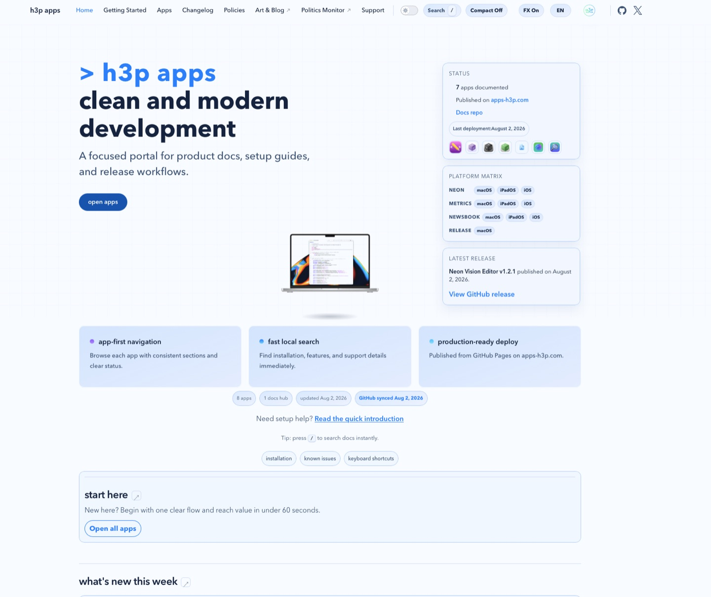
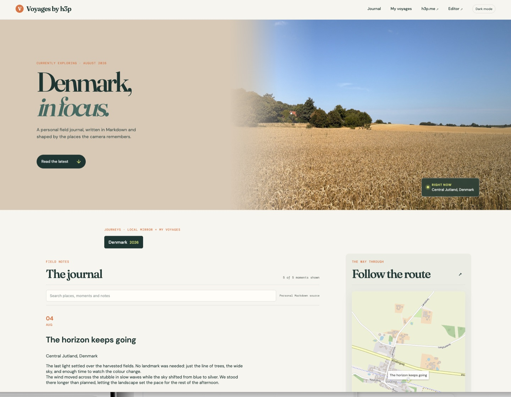
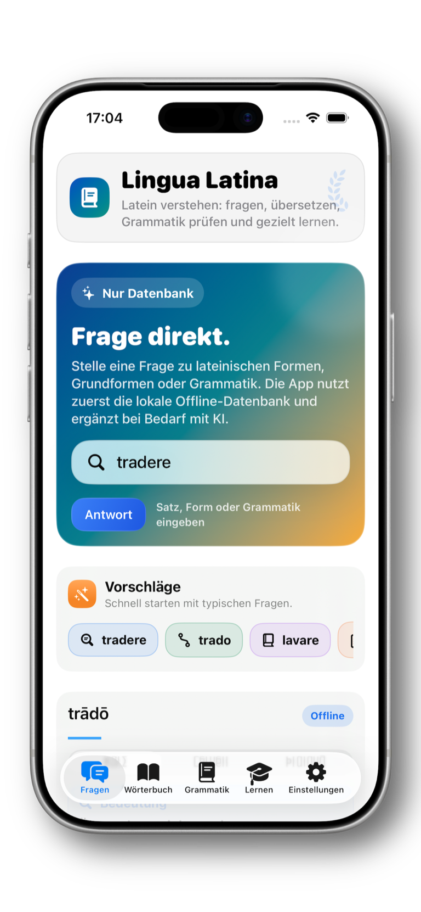

INDEPENDENT DEVELOPER · COPENHAGEN
Software with
a point of view.
I build native Apple tools, calm interfaces, and reliable systems for people who care how software feels.
Performance, clarity, long-term usefulness.
SELECTED WORK
04 SELECTED · 01 DAILY FEATUREIndependent Apple apps, field notes, and developer infrastructure—each made to be useful, legible, and built to last.

Neon Vision Editor
A lightweight, native code and Markdown editor built for speed, readability, and a quiet workspace.
- Native across four Apple platforms
- Built for local files and long sessions

apps-h3p.com
A focused home for app documentation, setup guides, release notes, and support materials.
- Practical docs and release notes
- One home for the app ecosystem

Voyages
A living travel journal where writing, photographs, and place meet in one readable interface.
- Writing, maps, and original photographs
- A continuously growing public journal

GitBird
A focused menu bar companion for GitHub and GitLab notifications, designed to stay out of the way.
- Native macOS menu bar utility
- Open source and privacy-minded

Lingua Latina
A quiet Latin companion for translation, grammar, and offline study.
- Native iPhone learning companion
- Useful offline, not just online
Native by default
Private by design
Fast in practice
Made to last
REPOSITORY REGISTER
PUBLIC · ACTIVE · MAINTAINEDA focused index of public repositories I own or actively maintain. Forks, private projects, and inactive mirrors are intentionally left out.
A LITTLE CONTEXT
h3p / 2026Native by default.
Human by design.
I’m h3p, an independent developer making software across Swift, SwiftUI, AppKit, UIKit, Python, and the web. My work sits at the intersection of product design and engineering: tools that are capable without becoming complicated.
Each project starts with a practical friction—too much complexity, too little clarity, or a workflow that deserves a calmer tool—and is shaped into something people can trust for the long term.
I care about responsive interfaces, explicit privacy, reliable release workflows, and the small details that make a product feel considered.
More about the work on GitHub ↗WORK · WRITING · PHOTOGRAPHY
PUBLIC INDEX